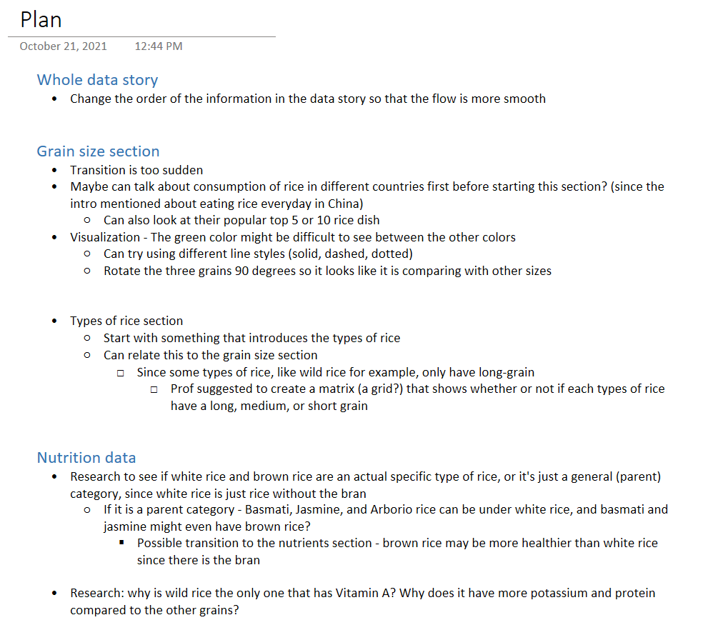
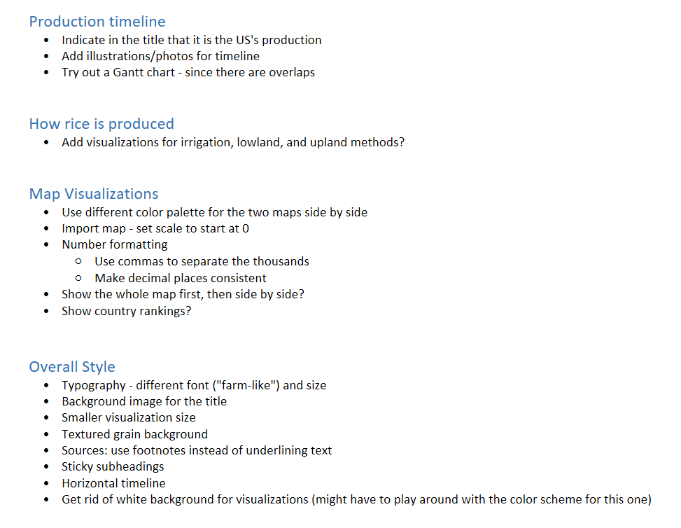
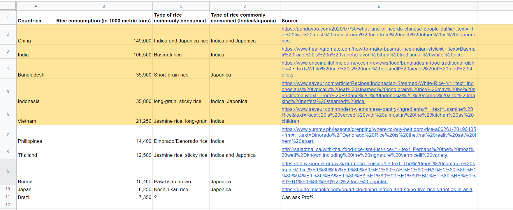
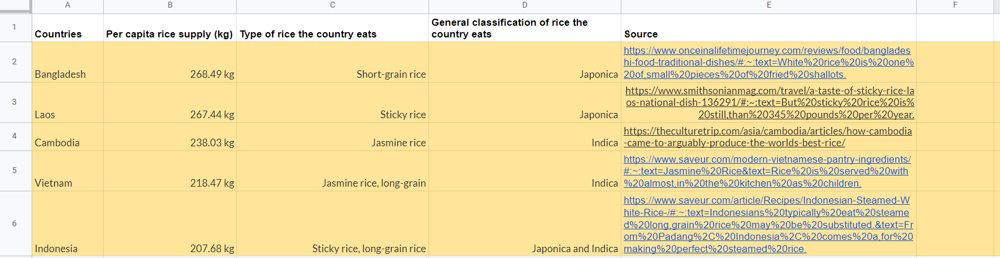
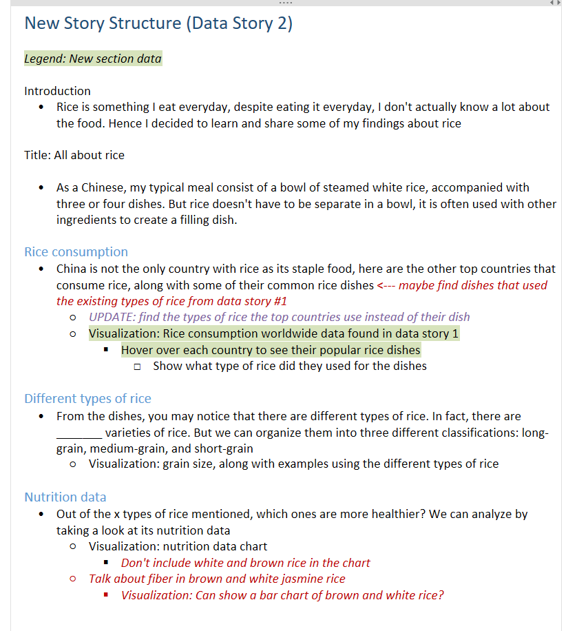
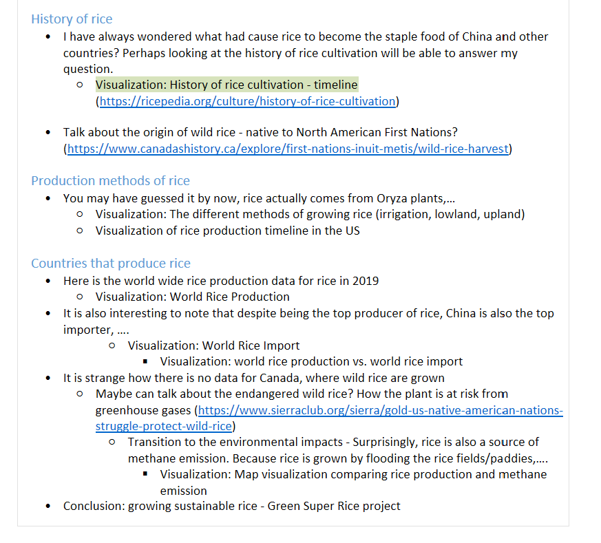

Determining revision and new section
I wrote down all of the details that I want to revise in my data story. Please download the pdf to see all the comments in Acrobat, since the browser version doesn't show the comment replies.
To figure out what section I should add, I first listed out all the sections that my data story has so far. I find that my data story is more focused on the production and envrionmental aspects of rice, and lacks the cultural aspect, which is something that I can talk about.

After the 1-on-1 meeting in week 2 do I realize that the transition between each section of the story isn't really smooth. Hence I decided to reorder the sections first, and then for sections that I can't figure out how to transition, I will add a new section to help bridge it.

Due to the time constraints, I don't think I will be able to revise everything, hence I made a list of what I should prioritize.

After recieving feedback from class meetings, the plan eventually became like this:
 Transition of the Beginning Part
To transition from the title to the different types of rice in the nutrition chart, I plan to talk about rice consumption in other countries first, and then introduce a common example of a rice dish that the top 5-10 countries consume. Through feedback during class, I learned that the rice dish varies in different regions of each country, so it is hard to pick a dish that is inclusive to the whole country. But the type of rice is usually the same for different rice dishes, hence I decided to focus on the common type of rice the countries consume. For some of the countries, I wasn't able to find the specific type of rice they used. So I ended up focusing on the two classifications (Japonica and Indica) instead of the specific type (jasmine, basmati,...).
 Google sheet process: https://docs.google.com/spreadsheets/d/1S6seul18zppOpdE8iNReJ5ZUQR3WwInlUEgKTJsUiWA/edit?usp=sharing
Rediscovering Rice Classifications
After Prof suggested me to see if white and brown rice is a parent category instead of a specific type of rice, I realized that the same thing goes for red rice and black rice. At the same time, black rice is not the same as wild rice. Wild rice comes from a totally different plant. No wonder the worldwide rice production map did not include Canada, even though wild rice was one of the important crops for the First Nations. I think it would have been great to talk about this in my data story if there was extra time.
 Production Timeline Redesign
I redesigned the timeline because I think having the whole timeline fit on the broswer window would allow the viewer to understand the time span even better. In the original (verticle) timeline, the steps like step 2 (irrigation & growing) and step 3 (harvest) are cropped.


Prof suggested that I should explore using a Gantt chart for this, which it ended up being the final chart. I think Gantt charts showed the overlaps between the steps better than the timelines.
View the final version here